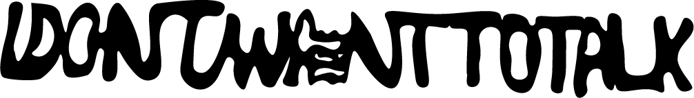
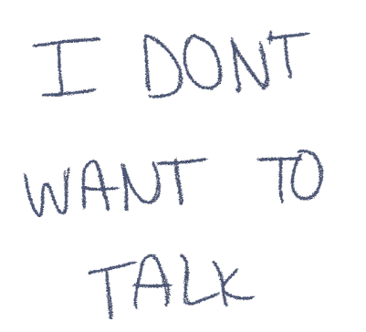

Vormgeving 2
Tweede jaar
Het doel van dit project was om visual research te kunnen doen op basis van sfeerwoorden. Deze sfeerwoorden heb ik gehaald vanuit het gekozen nummer waarvoor ik uiteindelijk de lyric video heb gemaakt. Met deze visual research heb ik ook twee lettertypes gemaakt voor de lyric video.
Als eerste heb ik een nummer uitgekozen. Het gekozen nummer was; i don’t want to talk van wallows. Als eerst heb ik de lyrics geanalyseerd. Ik heb zelf naar de tekst gekeken, en de genius video waarin de artiesten zelf uitleggen waar het nummer over gaat.
Het nummer gaat over iemand die zich beseft dat hij niet kan zonder zijn partner. Hierdoor voelt hij zich onzeker.
Hier heb ik de volgende sfeerwoorden uitgehaald: onzekerheid en verbondenheid
Nadat ik de sfeerwoorden had uitgekozen heb ik afbeeldingen verzameld die deze woorden goed weergeven
Vervolgens heb ik de afbeeldingen goed geanalyseerd, zodat ik zelf een goed beeld had bij wat ik zelf zou willen meenemen in mijn animatie. Ik heb 4 uitgangspunten gemaakt;
1. De dingen die ik er vooral heb uitgehaald zijn dat de afbeeldingen erg donker van kleur zijn. Je ziet veel zwart, grijs, wit en ook wat blauw.
2. Alles staat erg groot en centraal in beeld en valt op.
3. Je merkt ook dat er veel water en handen te zien zijn.
4. Ook zie je twee twee losse dingen samen komen of breken van elkaar.
 Op basis van de uitgangspunten heb ik twee lettertypes gemaakt. Een voor de titel van het nummer, en een voor de rest van de lyrics. Met de lettertypes wilde ik verbondenheid en onzekerheid laten terugkomen. In de eerste zie je dat het vest zit aan elkaar en langzaamaan los gaat. In de tweede zie je dat de letters erg dun en niet netjes zijn om het er onzeker uit te laten zien. Ook bewegen ze om de onzekerheid nog meer in kaart te brengen.